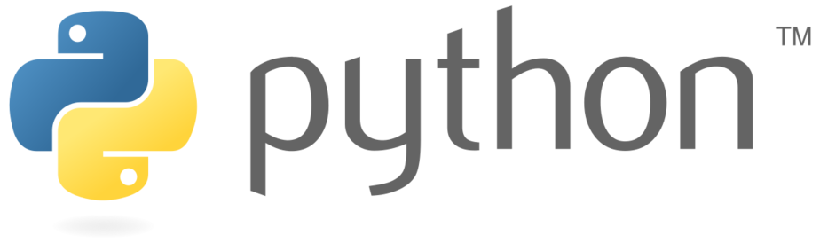
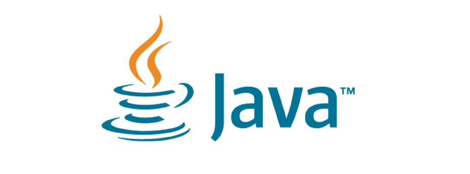
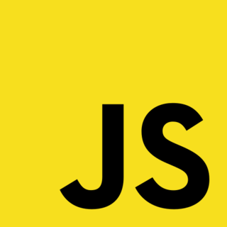
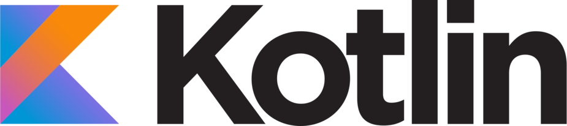
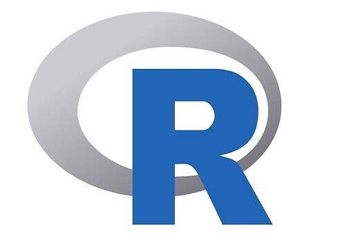
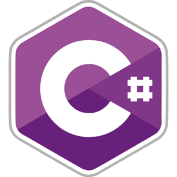
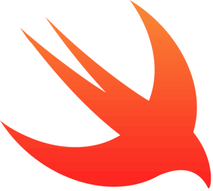
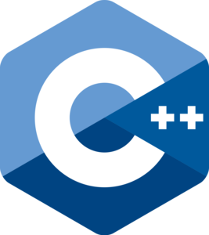
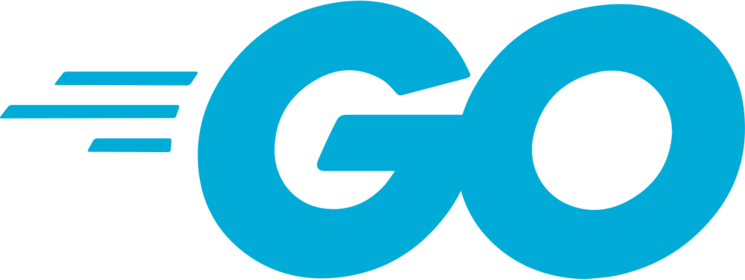

ІТ-сфера стрімко розвивається, з’являються нові спеціальності, змінюються задачі та вимоги до ІТ-спеціалістів. Щоб бути затребуваним програмістом, потрібно бути у курсі ІТ-трендів, розвиватись, бути “вічним студентом”.
Хороший спосіб зростання — вивчати різні мови програмування. «Скільки мов ти знаєш, стільки разів ти людина», — крилатий вираз можна віднести і до ІТ. Вивчення нової мови — це інвестиція. У нові знання, нові можливості заробітку та кар’єрного зростання.
Мова, до якої ви звикли, завтра може морально застаріти, а ви залишитесь без шмату хліба. А от поліглотам від ІТ легше вистояти у конкуренції з іншими профі.
Python
Мова програмування Python з’явилася у далекому 1991-му і з тих пір стала загальновживаною. Її автор ставив за мету створити мову з низьким порогом входу для новачків та відкритим кодом, щоб кожен міг робити свій внесок у розвиток та підтримку коду.
Переваги:
- легко вивчати, легко розуміти, код читається майже як звичайний текст.
- ідеально підходить для швидкої розробки застосунків,
- пошук необхідної функції легкий завдяки величезній бібліотеці,
- портативність: достатньо один раз написати програму і запустити будь-де.
Недоліки
- не дуже продуктивна та швидка мова (Python «повільний», як і його тезка з родини змій).
Java
Одна з найбільш розповсюджених мов, популярність до якої прийшла у 1995-му. Розробники спочатку використовували її для телевізорів та телеприставок. Згодом мова перетворилася на універсальну для різноманітних рішень.
За деякими підрахунками, мова програмування Java використовується у 3 мільярдах пристроїв. Саме цю мову компанія Google обрала для створення додатків.
Переваги:
- мова потужна, але зручна та легка для початківців,
- достатня кількість літератури,
- має величезні бібліотеки та фреймворки,
- є кросплатформенною, тобто може працювати з різними ОС та апаратними системами,
- велика кількість напрацьованих практик, концепцій та підходів,
- ІТ-компанії потребують різних програмістів на Java: не тільки досвідчених розробників, але й новачків,
- є багато вбудованих функцій для підвищення безпеки,
- усі пристрої Android застосовують Java.
Недоліки
- має довгі та складні конструкції, погано читабельні та скановані,
- її не можна назвати «красивою» через складний код,
- занадто «багатослівна».
Java Script
Легка, інтепретована, багатопарадигмальна мова, що застосовується при написанні сценаріїв веб-сторінок та середовищ, що не є браузерами. Одна з найстарших: була створена у 1995 році.
Кожен веб-застосунок або сайт базується на трьох китах: HTML, CSS та JS. Остання виступає «мозком» розробки й відповідає за логіку, взаємодію з користувачем та інтерактив (робить веб-сторінку «живою»).
Переваги:
- мабуть, найлегша для вивчення мова навіть для зовсім новачків,
- швидка,
- обсяг коду менший за інші мови,
- підтримується усіма браузерами,
- можна виконувати код безпосередньо в браузері, зменшуючи навантаження на сервер,
- на JavaScript можна писати будь-які застосунки,
- багато бібліотек та фреймворків,
- на Stack Overflow легко знайти відповіді та підказки з розв’язання різних задач,
- сумісна з іншими мовами.
Недоліки
- має проблеми з безпекою даних клієнтів, чим можуть скористатися зловмисники,
- є недоробки, через які розробники отримують багато скарг,
- часто оновлюється, тож треба підлаштовуватися під зміни,
- не підходить для мережевих застосунків, оскільки не підтримує віддалений доступ.
Kotlin
Застосовується здебільшого для Android, але може працювати в інших системах. Мова молода, була створена у 2011 році. Kotlin поєднує об’єктно-орієнтовану та функціональну парадигми. Сумісна з Java, тож програмісти можуть легко переводити проєкти на Kotlin. Це спрощує життя: не треба переписувати код, достатньо внести туди Kotlin.
R
До цієї мови найчастіше вдаються для аналізу даних та популярного нині машинного навчання. З’явилася у 1993 році в якості покращеної версії мови S, має схожий синтаксис та особливості.
Переваги:
- легко читається й підтримується,
- дуже виразна, лаконічна мова,
- інтегрується в існуючу базу,
- розумний та безпечний компілятор.
Недоліки
- мало літературних джерел,
- менша, ніж у Java, спільнота розробників
C#
Розроблена корпорацією Microsoft, мова С# є одночасно об’єктно-орієнтованою та багатоцільовою. Працює на Common Language Infrastructure, тож її можна застосовувати на різних платформах. Дуже подібна до Java, тому вивчати С# буде нескладно.
Переваги:
- надійна вбудована бібліотека, що дозволяє розробляти алгоритм машинного навчання,
- відкритий код,
- кросплатформенність,
- спрощена та якісна побудова графіків,
- перебіг даних підтримується на зразковому рівні,
- постійно вдосконалюється.
Недоліки
- слабкий рівень базової безпеки,
- складна для вивчення,
- доволі повільна.
Swift
Ця доволі нова мова (розроблена у 2014-му компанією Apple). Втім, у стислі строки вона змогла увійти у топ популярних мов програмування серед розробників, а це буває рідко. Припускаємо, що це є результатом грамотної маркетингової політики Apple.
Swift має широке коло застосування, але здебільшого для створення застосунків на базі iOS. В її основу було покладено сучасний підхід до безпеки, продуктивності та шаблонів дизайну.
Переваги:
- інтегрується з Windows та .NET,
- цілісна й легка для вивчення та вжитку,
- висока популярність.
Недоліки
- трохи повільніше від компільованих мов,
- менше гнучкості, ніж у інших мов програмування
- оскільки це .NET, ви будете працювати лише з продуктами Microsoft
PHP

Бум її популярності прийшовся на початок 2000-х. Це багатоцільова мова сценаріїв та програмування. Одна із найстаріших мов, що до сих пір не втратила актуальності. Широко використовується у багатьох організаціях, і її знання часто є вимогою при наймі на роботу.
Переваги:
- відкритий код,
- низький поріг входу та висока популярність,
- веб-сторінки на PHP у пошукових системах мають більш високі позиції через хорошу швидкість їх завантаження,
- сумісна з HTML,
- легка в освоєнні,
- багато бібліотек, плагінів та інтеграцій.
Недоліки
- слабкий метод обробки помилок,
- частіше застосовується для веб-розробки, хоча може використовуватись і при створенні мобільних застосунків.
C++
Мова програмування С++ — це доповнена версія С, однієї з найстарших мов (існує з 1972-го), з якої пішли деякі сучасні мови програмування (JavaScript, Java, C#). С++ використовується при роботі з Microsoft та Windows. Вона дозволяє «вичавити усі соки» із заліза, тому її часто можна зустріти в ігровому софті.
Переваги:
- висока продуктивність,
- сумісність із С,
- популярність,
- універсальність, кросплатформенність,
- багата бібліотека,
- підтримка різних стилів та технологій програмування.
Недоліки
- складна, як ім’я та прізвище її автора (Б’йорн Страуструп),
- погана підтримка модульності,
- примітивний процесор, що призводить до великої кількості помилок.
Go (або Golang)
Нова скомпільована мова, створена компанією Google у 2007-му. Належить до перспективних мов програмування. За синтаксисом схожа з С. Вирішує різні задачі — від машинного навчання до мережевого та системного програмування.
Переваги:
- легка в освоєнні та розумінні,
- безпечна,
- надійна,
- має вбудоване тестування,
- підтримує процеси автоматизації,
- підтримує процеси автоматизації,
Недоліки
- поки що не дуже популярна, мало фахівців та вакансій,
- не пропонує віртуальну машину (для підтримки багатьох платформ це дуже важливо).
Scala
У мові Go між поняттями «простота» та «ефективність» можна ставити знак рівності. Ця мова — майбутнє програмування. Є велика вірогідність, що ІТ-гіганти скоро перейдуть на неї через її надійність. Тож якщо ви вагаєтесь, яку нову мову вивчати, сміливо обкладайтесь підручниками з Go.
Переваги:
- сумісна з Java-командами та може працювати з будь-яким із її кодів,
- легко буде перейти на цю мову після Java,
- легке програмування та масштабування,
- її обирають ті, кому подобається об’єктний підхід, але не подобається, як це зроблено на Java.
Недоліки
- складніше для написання та читання, ніж Java,
- повільна компіляція.
Rust

Мову створила компанія Mozilla у 2006-му році. Автори хотіли, щоб Rust стала вдосконаленою версією С та С++. Завданням нової мови було усунути недоробки попередників (важка компіляція, ризик витоку даних), підвищити продуктивність та безпеку. У рейтингах Stack Overflow щороку займає високі позиції.
Переваги:
- лаконічний синтаксис, подібний до С,
- кодовий аналізатор, що не припускає витоку пам’яті,
- надійна система взаємодії з пам’яттю.
Недоліки
- надійна система взаємодії з пам’яттю.
- повільніше за С++.
Dart
Google, що виступила розробником цієї мови програмування, ставила за мету замінити лідера — JavaScript. Або принаймні використовувати Dart тоді, коли JS припускається помилок (вони часто виникають, коли кількість рядків у JavaScript перевалює за тисячі).
Переваги:
- легко вивчається, особливо після JavaScript та Java,
- гнучка структура, швидка та зручна розробка програм,
- висока продуктивність, dart-код працює значно швидше за js-код,
- кросплатформеність
- сувора до синтаксису, припустити помилки важче, ніж у JavaScript, що у цьому плані є більш «вільною»,
- багато літератури.
Недоліки
- маленька спільнота,
- в Україні мало вакансій для Dart-розробників.